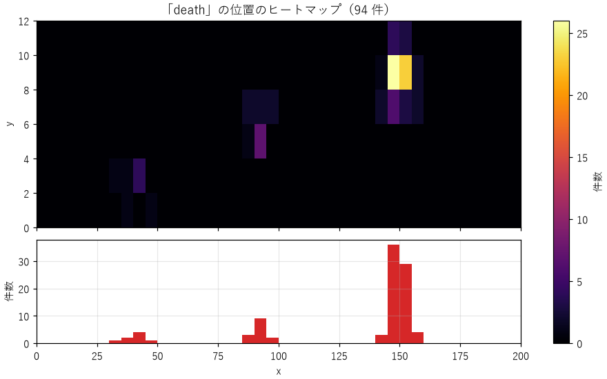
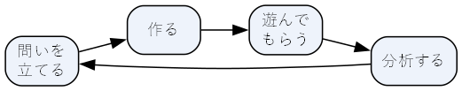

11. プロトタイピングとプレイテスト
第 2 章で、デザイナーが直接作れるのはルールだけであり、ルールの変更が体験に与える影響は実際に遊んで確かめる作業が欠かせないと述べた。この章では、アイデアを素早く形にして確かめる試作（プロトタイピング）と、他の人に遊んでもらって問題を見つけるプレイテストの進め方を扱う。
11.1. プロトタイプの目的
プロトタイプは、完成品の小さな版ではない。特定の問いに答えるための実験装置である。作り始める前に、そのプロトタイプで何を確かめたいのかを 1 つの問いとして書き出しておく。
問い |
作るもの |
|---|---|
敵を踏んで倒す操作は気持ちよいか |
四角いキャラクターと四角い敵だけが動く画面 |
3 種類のユニットの相性は駆け引きを生むか |
紙に書いたユニットのカードと、さいころ |
時間が巻き戻る仕掛けで、パズルが作れるか |
仕掛けだけを実装した、1 つの小さな部屋 |
プレイヤーは地図を見ずに目的地にたどり着けるか |
灰色の箱で組んだブロックアウトのレベル |
問いが決まれば、その問いに関係しない部分は作らなくてよい。操作の気持ちよさを確かめるのに、タイトル画面も物語も要らない。問いと関係の無い部分に時間をかけるほど、試せる回数が減り、作ったものを捨てにくくなる。
11.2. 紙のプロトタイプ
ルールやバランスを確かめるだけなら、プログラムを書く必要すらないことが多い。紙、カード、さいころ、おはじきなどを使えば、数十分でルールを形にして遊べる。
紙のプロトタイプには次の利点がある。
ルールをその場で書き換えて、すぐに遊び直せる。
プログラムを書けない人も、設計の議論に参加できる。
コンピューターが自動で処理する部分も人が手で行うので、ルールの複雑さを肌で感じられる。手で処理するのが面倒なルールは、プレイヤーにとっても理解しにくいことが多い。
一方で、リアルタイムの操作感や、大量の計算が必要な仕組みは、紙では確かめられない。そうした問いには、デジタルのプロトタイプが必要になる。
11.3. デジタルのプロトタイプ
デジタルのプロトタイプでは、見た目に凝らず、四角や丸などの単純な図形で作る。第 7 章の jump_feel.py は、キャラクターも足場もただの四角だが、ジャンプの操作感という問いに答えるには十分である。
デジタルのプロトタイプを作るときは、次の点を心がけるとよい。
調整したい数値を 1 か所にまとめる：
jump_feel.pyのように、物理のパラメーターをファイルの先頭に定数として並べておくと、値を変えて試すのが簡単になる。実行中に切り替えられるようにする：数字キーで工夫の ON / OFF を切り替えたように、比べたい設定を実行中に切り替えられると、違いが分かりやすい。
捨てる前提で作る：プロトタイプのコードは、問いに答えたら捨ててよい。製品のコードの品質を求めると、試作の速さが失われる。
11.4. プレイテスト
プレイテストは、他の人にゲームを遊んでもらい、その様子を観察して問題を見つける作業である。作った本人は、ルールも正解の道筋も知っているため、初めて遊ぶ人がどこで迷い、何を誤解するかが分からない。プレイテストは、この知識の偏りを取り除く最も確実な方法である。
11.4.1. プレイテストの準備
確かめたいことを決める：プロトタイプと同じく、何を確かめるかを先に決める。「最初のレベルで、説明なしにジャンプの操作に気付けるか」のように具体的にする。
対象者を選ぶ：ゲームが想定するプレイヤーに近い人に遊んでもらう。開発者の仲間は、ゲームに慣れすぎていることが多い。また、同じ人に何度も遊んでもらうと、その人はゲームを覚えてしまい、初めて遊ぶ人の反応は得られなくなる。
記録の方法を決める：観察のメモ、画面の録画、ゲーム内のログなど、何をどう記録するかを決めておく。
11.4.2. プレイテストの進め方
プレイテストで最も重要なのは、遊んでいる人に口を出さないことである。迷っている人を見ると、つい「そこは右だよ」と教えたくなるが、教えてしまうと、そのゲームが説明なしでは分からないという事実を見逃す。製品版のゲームでは、デザイナーが隣に座って教えることはできない。
遊んでいる人には、思ったことを声に出しながら遊んでもらうとよい。この方法を発話思考法と呼ぶ。「これは何だろう」「たぶんここを押せばいい」といった言葉から、プレイヤーがゲームをどう理解しているかが分かる。
遊び終わった後には、短い質問を行う。質問は、答えを誘導しない形にする。
よい質問の例 |
避けたい質問の例 |
|---|---|
このゲームでは何をするのが目的だと思ったか |
目的は分かりやすかったか |
一番印象に残った場面はどこか |
ボス戦は楽しかったか |
やめたくなった瞬間はあったか。それはどこか |
難しすぎなかったか |
友人にこのゲームをどう説明するか |
このゲームは面白かったか |
避けたい質問の多くは「はい」か「いいえ」で答えられ、しかも相手が気を遣って「はい」と答えやすい。テストに協力してくれた人は、作った人の前で悪い感想を言いにくいものである。プレイヤーの言葉よりも、プレイヤーの行動（どこで止まったか、何回失敗したか、どこで笑ったか）を重視するのがよい。
11.4.3. 何人に遊んでもらうか
ユーザビリティの分野では、ヤコブ・ニールセンが「5 人程度のユーザーでテストすれば、主要な問題の多くが見つかる」と述べたことがよく知られている。少人数のテストを何度も繰り返すほうが、大人数のテストを 1 回行うより効率がよいという考え方である。ゲームでもこの考え方は参考になる。ただし、難易度のばらつきや、多様なプレイヤーの好みを調べるには、より多くの人数が必要になる。
11.5. ログで遊び方を記録する
観察とあわせて、ゲームの中でプレイヤーの行動を自動的に記録しておくと、数字で問題を見つけられる。記録する内容の例を次に示す。
記録 |
分かること |
|---|---|
失敗（死亡）した位置と回数 |
難しすぎる場所、理不尽な場所 |
プレイをやめた位置 |
意欲を失わせる場所 |
各区間にかかった時間 |
迷いやすい場所、間延びする場所 |
通った経路 |
想定外の近道や、誰も通らない場所 |
アイテムや能力の使用回数 |
使われない選択肢、強すぎる選択肢 |
11.5.1. ヒートマップで可視化する
位置の記録は、ヒートマップにすると傾向が一目で分かる。ヒートマップは、マップを区画に分け、区画ごとの件数を色の濃さで表した図である。
playtest_heatmap.py は、次の形の CSV ファイルからヒートマップを描くプログラムである。1 行が 1 つの出来事を表す。
1session,level,x,y,event
21,demo,41.8,2.3,death
31,demo,90.6,6.1,death
41,demo,195.0,3.0,clear
--input を省略すると、横スクロールのアクションゲームを想定した架空のログを生成して使う。架空のレベルには、x = 40（穴）、x = 90（敵）、x = 150（難しいジャンプ）の 3 か所の難所があり、架空のプレイヤー 30 人が、それぞれの難所を突破するまで挑戦を繰り返す。同じ難所で 6 回ミスしたプレイヤーは、そこでプレイをやめてしまう。
56def play_hazard(session: int, hazard: Hazard, skill: float, rng: random.Random) -> tuple[list[Record], bool]:
57 """1 つの難所を突破するか諦めるまで挑戦する。出来事の一覧と、突破できたかを返す。"""
58 records: list[Record] = []
59 while rng.random() >= hazard.success + skill:
60 x, y = round(rng.gauss(hazard.x, 3), 1), round(max(0.0, rng.gauss(hazard.y, 1)), 1)
61 records.append(Record(session, "demo", x, y, "death"))
62 if len(records) >= GIVE_UP_DEATHS:
63 records.append(Record(session, "demo", x, y, "quit"))
64 return records, False
65 return records, True
1python playtest_heatmap.py

図 11.1 死亡位置のヒートマップ（上）と、横方向の位置ごとの件数（下）
図から、x = 150 付近の難所での死亡が他の 2 か所に比べて突出していることが分かる。実行したときに表示される集計では、30 人中 3 人がプレイをやめていた。
1セッション数: 30
2 clear: 27 件
3 death: 94 件
4 quit: 3 件
このデータからは、x = 150 の難所の難易度を下げるべきかどうかを検討することになる。ただし、データは「どこで」問題が起きているかは教えてくれるが、「なぜ」起きているかは教えてくれない。ジャンプの距離が長すぎるのか、足場が見えにくいのか、直前に気を散らすものがあるのかは、プレイテストの録画や観察と突き合わせて判断する。
11.6. 改善を繰り返す
プレイテストで見つかった問題は、次のような手順で改善する。

図 11.2 試作と改善の繰り返し
問題に優先順位を付ける：プレイテストではたくさんの問題が見つかる。すべてを一度に直すことはできないので、プレイヤーの体験への影響が大きく、多くのプレイヤーに起きている問題から直す。
一度に 1 つずつ変える：複数の箇所を同時に変えると、どの変更が効いたのか分からなくなる。これは実験の基本と同じである。
変えたら、もう一度確かめる：直したつもりの変更が、別の問題を生むこともある。変更のたびに、新しい人にプレイテストを行う。
製品として公開した後のゲームでは、プレイヤーを 2 つのグループに分け、一方には変更前、もう一方には変更後の版を遊んでもらって結果を比べる A/B テストを行うこともある。
11.7. 演習
自分の作りたいゲームについて、最初に作るプロトタイプで確かめたい問いを 1 つ書き、その問いに答えるために最低限必要なものを列挙せよ。
遊んだことのある単純なカードゲームのルールを 1 つだけ変え、紙のプロトタイプで遊んで、体験がどう変わったかを記録せよ。
playtest_heatmap.pyのDEMO_HAZARDSで、x = 150 の難所のsuccessを 0.35 から 0.6 に上げて実行し、死亡の件数とプレイをやめた人数がどう変わるかを確かめよ。友人に何かのゲームを初めて遊んでもらい、口を出さずに観察せよ。プレイヤーが迷った場所と、その原因と思われるものを記録せよ。